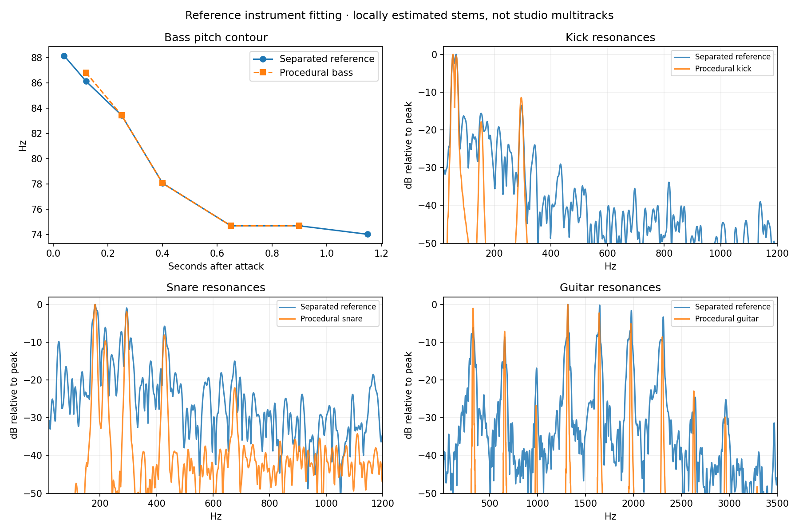

The first score used generic patches and inferred accompaniment from the mixed track. The revision builds six procedural instruments from measurements of locally separated bass, drums, vocals and accompaniment, and corrects their registers and entrances.
The stems are estimates produced by Demucs, not original studio multitracks. Spectral and timing comparisons establish specific similarities; they do not establish an exact perceptual match. The reconstruction has not been verified by ear. The breathy lead approximates the vocal’s register and spectral balance, without lyrics or a recreation of the singer’s voice.
| Part | Measured reference features | New synthesis |
|---|---|---|
| Bass | Dominant fundamental; second harmonic about 0.2–0.4 of the fundamental; weak upper harmonics. A repeatable fall from approximately 88 to 75 Hz over 0.65 seconds, followed by a quiet tail. | Additive, rounded tone with a shaped pitch contour, changing harmonic levels and the measured amplitude decay. Low sections transpose the figure down an octave. The square-wave pulse and strong distortion are removed from the preset. |
| Kick | Low resonances near 54 and 65 Hz, with weaker shell energy near 153 and 295 Hz. A short noisy attack over a longer low tail. | Separate decaying head and shell modes with a soft beater transient. Much less of the sharp electronic pitch sweep in the first patch. |
| Snare | Strong modes near 183 and 295 Hz; secondary modes at 219 and 428 Hz. Most energy decays within about 0.2 seconds. | Inharmonic drum modes plus a short, filtered noise wire layer. Dry room setting and a roughly 70 ms late backbeat. |
| Hats | Low-level, irregular treble transients. Exact cymbal identity is less certain because snare energy leaks into this band. | Short metallic partials and filtered noise, subdued in the mix, with occasional longer articulations. |
| Guitar / accompaniment | Opening figure around E4 (≈329 Hz), with unusually prominent fourth, fifth, sixth and seventh harmonics. Later C♯4, D4 and G♯4 material. Sparse picked gestures. | Plucked string partials with the measured bright harmonic balance, pick noise, slight attack bend and a cabinet filter. Single-note figures replace the previous low open-interval chords. |
| Vocal role | First strong entrance around 25 seconds; opening low notes near F3, E3 and E♭3, interspersed with higher gestures. Fundamental and second harmonic dominate. | A lower glottal/formant instrument with breath, pitch scoops and syllabic envelopes. It enters in the low-bass section; the opening break is instrumental. |

The separated drum onsets refine the earlier 81.2 BPM mixed-track estimate to 82.0 BPM. The two-bar groove includes straight low-drum hits, pickups before some third beats, late snares and uneven hats. The previous generic kick pattern has been replaced.
The main low-end identity is a continuously falling pitch, not a sequence of chromatic bass notes. The upper bass lands around D2 with roughly +28 cents of tuning; the low version is an octave below. The contrasting section moves toward G1 from A1. These are practical synthesis targets, not a verified chord chart.
The opening guitar repeats E4. Lower-bass passages use C♯4/D4/G♯4 gestures, and later passages return to E/B-related colour. The accompaniment is deliberately sparse. A confident functional progression such as I–IV–V is not supported by this analysis.
The score starts with a quiet lead-in and low pickup, then bass and drums. Guitar enters at bar 4, and the low voice at bar 8. Upper-register, lower-register and contrasting sections follow the reference’s broad sequence. Vocal activity is concentrated in the lower-bass passages rather than running continuously. The score loops after 80 bars; small velocity and noisy-articulation changes are seeded and repeatable.
The groove suggests a restrained, loping, hypnotic feel. The repeated downward bass motion and sparse, bright guitar make it feel unstable and slightly eerie. Dry percussion and low vocal energy keep it intimate rather than expansive. These descriptions are interpretations, not measured properties.
Use the existing Audio tab and Play/Pause control. Each instrument has a Reference sound selected. Chords controls the guitar; Melody controls the low voice. Levels, decay, filter, distortion, reverb and delay still save through the existing settings system.
The score is in reference-score.js; the six procedural voices are in reference-instruments.js; the mix is in reference-audio-settings.js. Each note is generated from oscillating partials and seeded noise. Neither the MP3 nor the separated audio is shipped with or loaded by the sketch.
72 tests and the production build pass. Three 32-second offline renders through the actual instrument/effect graph cover the opening, low vocal section and contrasting register: peaks 0.933, 0.922 and 0.934, with no non-finite samples. These renders were silent in the existing shared VS Code tab. They check implementation and output level, not subjective similarity.
Instrument measurements and rendered-voice measurements preserve the numerical evidence. The initial whole-track overview, bass spectrograms and first-pass features remain available; the separated-source findings here supersede their earlier tempo and instrument interpretations.